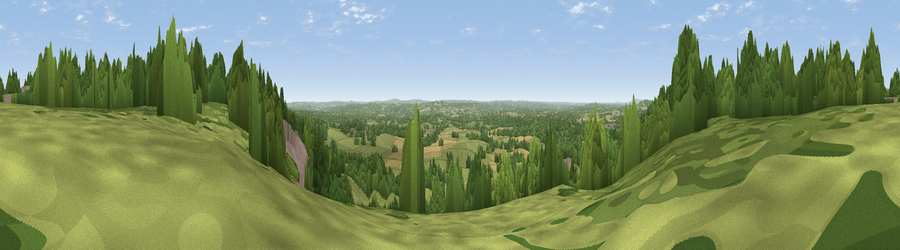

Viewpoint near Crockham Hill
#21481 in England · top 16% of its area beats it · near Crockham HillThe view, rendered

A 360° render of this exact spot computed from the terrain model, tree cover and land cover — summer colours, afternoon light, calibrated against photographs of famous viewpoints. Real trees, hedges and buildings will differ in detail.
The panorama
Grey silhouette: terrain skyline in each direction (720 bearings, Earth curvature and refraction included). Dashed green: skyline with trees (+15 m) and buildings (+8 m) as obstacles. Blue strip: how far the ground is visible on each bearing.
Where the view opens
Wedge length = distance to the farthest visible ground on that bearing (vegetation-aware). Rings at 10, 25 and 50 km.
What fills the view
48% woodland · 40% grassland · 11% cropland · 2% built-up
Angular shares of the visible panorama (visual magnitude), not map area. Landscape diversity 0.45 (0–1 Shannon).
Key numbers
More beautiful places nearby
The staircase of upgrades: each row has a higher view potential than everything closer. Driving times are estimates from straight-line distance, calibrated against real road routing — check an actual route before setting out.
| Place | Direction | Drive | Score |
|---|---|---|---|
| Viewpoint near Limpsfield | W · 1 km | ~2 min | 58.6 |
| Viewpoint near Crockham Hill | ESE · 2 km | ~5 min | 60.2 |
| Viewpoint near French Street | E · 4 km | ~10 min | 65.8 |
| Viewpoint near Limpsfield | NW · 5 km | ~10 min | 66.0 |
| Viewpoint near Ide Hill | E · 6 km | ~14 min | 67.9 |
| Viewpoint near Caterham Valley | W · 10 km | ~19 min | 68.0 |
| Viewpoint near Shipbourne | E · 14 km | ~26 min | 69.1 |
| Box Hill | W · 22 km | ~37 min | 70.4 |
51.24600, 0.04062 · source: screening · position refined by local search. Computed location — check access rights before visiting.